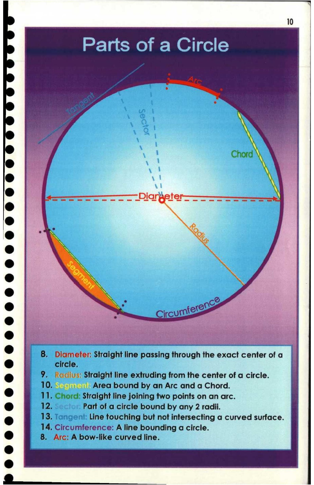

10. Parts of a Circle

10
Parts of a Circle
iste
e Ss Piarteter-———-—-=
®@ s
eo | .
e oe N%
t )
e@
@
@
eo; 4 OF
e be: = ircunnige™
Sab a aiad sc: pale eaten etapieeaylaeg |
© ee ees
. 8. Diameter: Straight line passing through the exact center ofa |
circle. ,
@ | 9. focius: Straight line extruding from the center of a circle.
10. |, Area bound by an Arc and a Chord.
* 11. Chore: Straight line joining two points on an arc.
@ 12; Part of a circle bound by any 2 radii.
* 13. Line touching but not intersecting a curved surface.
14, Circumference: A line bounding a circle.
@ 8. Arc: A bow-like curved line.
*